平均フォント
日本語オープンライセンス書体 100書体 のグリフを 256×256px で描画し、
ピクセル単位で平均したもの。各文字は平均に寄与した書体数（100書体中）付き。
滲んで見えるのは平均化の結果で、バグじゃない。
手法の詳細と書体一覧は README.md / SOURCES.md を参照。
コンタクトシート: 全174字一覧
ひらがな 46字
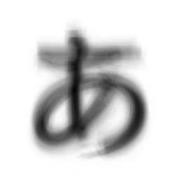
あ U+3042 · 228書体
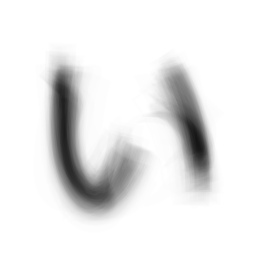
い U+3044 · 228書体
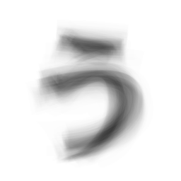
う U+3046 · 228書体
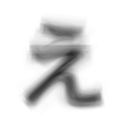
え U+3048 · 228書体
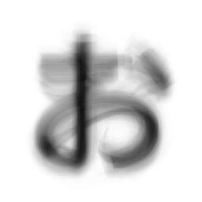
お U+304A · 228書体
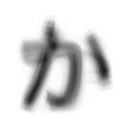
か U+304B · 228書体
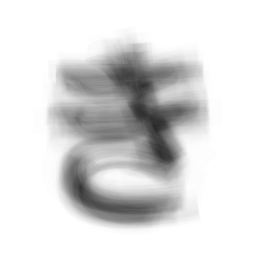
き U+304D · 228書体
く U+304F · 228書体
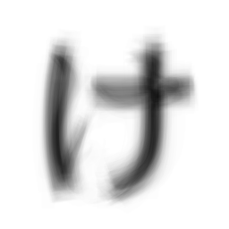
け U+3051 · 228書体
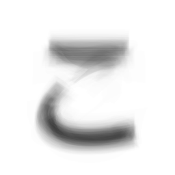
こ U+3053 · 228書体
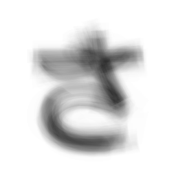
さ U+3055 · 228書体
し U+3057 · 228書体
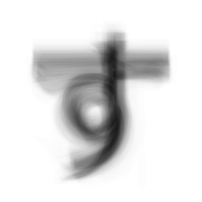
す U+3059 · 228書体
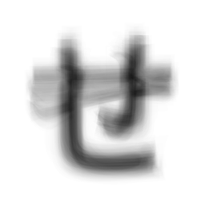
せ U+305B · 228書体
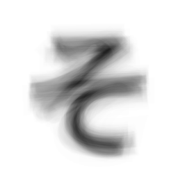
そ U+305D · 228書体
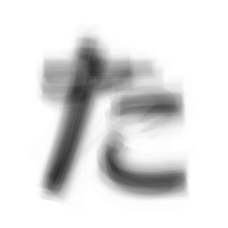
た U+305F · 228書体
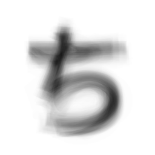
ち U+3061 · 228書体
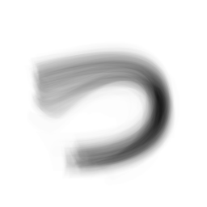
つ U+3064 · 228書体
て U+3066 · 228書体
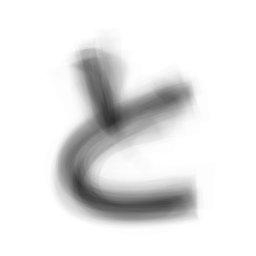
と U+3068 · 228書体
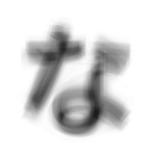
な U+306A · 228書体
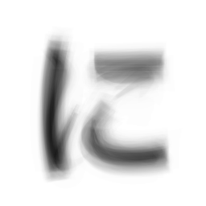
に U+306B · 228書体
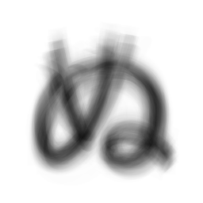
ぬ U+306C · 228書体
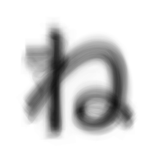
ね U+306D · 228書体
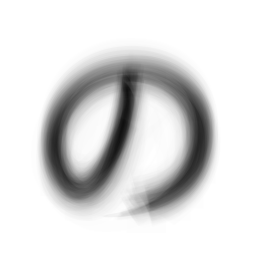
の U+306E · 228書体
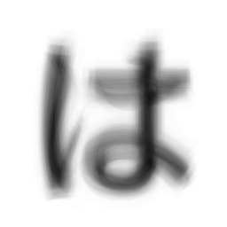
は U+306F · 228書体
ひ U+3072 · 228書体
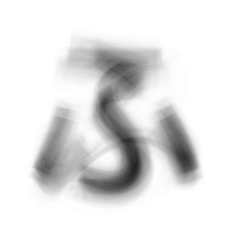
ふ U+3075 · 228書体
へ U+3078 · 228書体
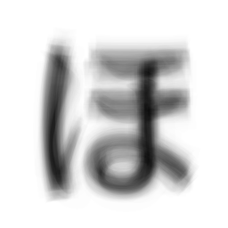
ほ U+307B · 228書体
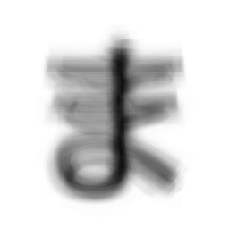
ま U+307E · 228書体
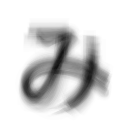
み U+307F · 228書体
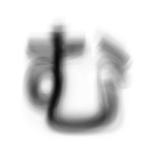
む U+3080 · 228書体
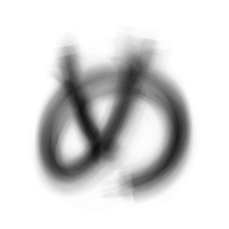
め U+3081 · 228書体
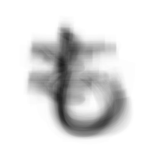
も U+3082 · 228書体
や U+3084 · 228書体
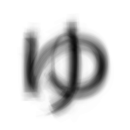
ゆ U+3086 · 228書体
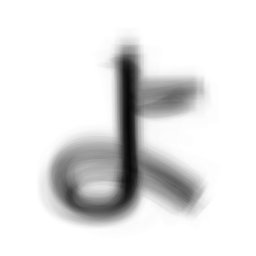
よ U+3088 · 228書体
ら U+3089 · 228書体
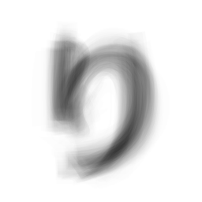
り U+308A · 228書体
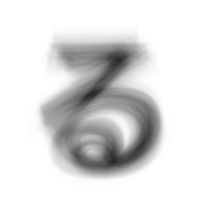
る U+308B · 228書体
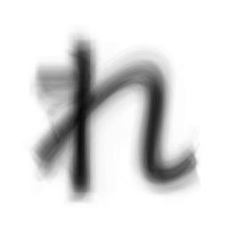
れ U+308C · 228書体
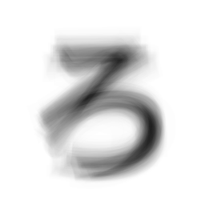
ろ U+308D · 228書体
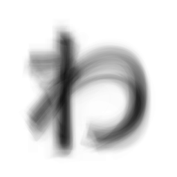
わ U+308F · 228書体
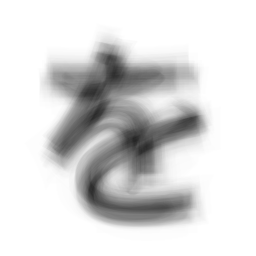
を U+3092 · 228書体
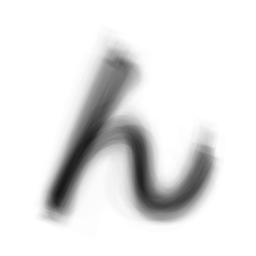
ん U+3093 · 228書体
カタカナ 46字
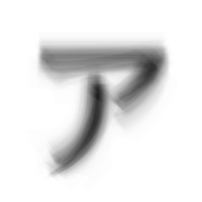
ア U+30A2 · 228書体
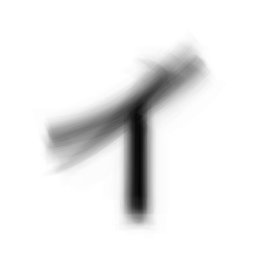
イ U+30A4 · 228書体
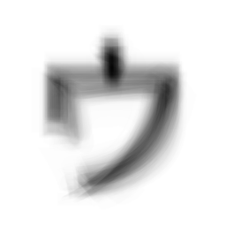
ウ U+30A6 · 228書体
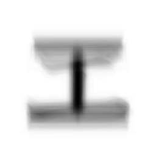
エ U+30A8 · 228書体
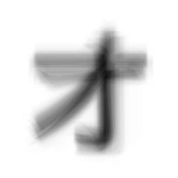
オ U+30AA · 228書体
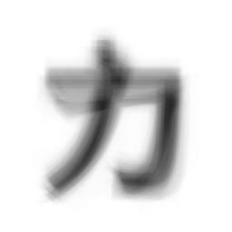
カ U+30AB · 228書体
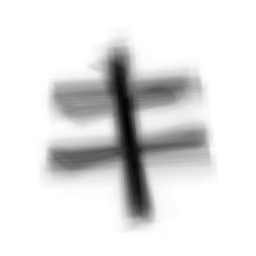
キ U+30AD · 228書体
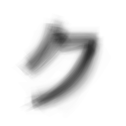
ク U+30AF · 228書体
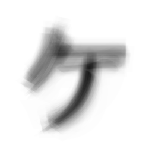
ケ U+30B1 · 228書体
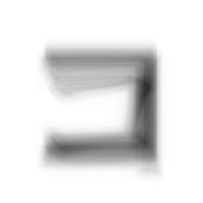
コ U+30B3 · 228書体
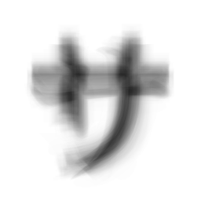
サ U+30B5 · 228書体
シ U+30B7 · 228書体
ス U+30B9 · 228書体
セ U+30BB · 228書体
ソ U+30BD · 228書体
タ U+30BF · 228書体
チ U+30C1 · 228書体
ツ U+30C4 · 228書体
テ U+30C6 · 228書体
ト U+30C8 · 228書体
ナ U+30CA · 228書体
ニ U+30CB · 228書体
ヌ U+30CC · 228書体
ネ U+30CD · 228書体
ノ U+30CE · 228書体
ハ U+30CF · 228書体
ヒ U+30D2 · 228書体
フ U+30D5 · 228書体
ヘ U+30D8 · 228書体
ホ U+30DB · 228書体
マ U+30DE · 228書体
ミ U+30DF · 228書体
ム U+30E0 · 228書体
メ U+30E1 · 228書体
モ U+30E2 · 228書体
ヤ U+30E4 · 228書体
ユ U+30E6 · 228書体
ヨ U+30E8 · 228書体
ラ U+30E9 · 228書体
リ U+30EA · 228書体
ル U+30EB · 228書体
レ U+30EC · 228書体
ロ U+30ED · 228書体
ワ U+30EF · 228書体
ヲ U+30F2 · 228書体
ン U+30F3 · 228書体
数字 0–9
0 U+0030 · 229書体
1 U+0031 · 229書体
2 U+0032 · 229書体
3 U+0033 · 229書体
4 U+0034 · 229書体
5 U+0035 · 229書体
6 U+0036 · 229書体
7 U+0037 · 229書体
8 U+0038 · 229書体
9 U+0039 · 229書体
英字 A–Z
A U+0041 · 229書体
B U+0042 · 229書体
C U+0043 · 229書体
D U+0044 · 229書体
E U+0045 · 229書体
F U+0046 · 229書体
G U+0047 · 229書体
H U+0048 · 229書体
I U+0049 · 229書体
J U+004A · 229書体
K U+004B · 229書体
L U+004C · 229書体
M U+004D · 229書体
N U+004E · 229書体
O U+004F · 229書体
P U+0050 · 229書体
Q U+0051 · 229書体
R U+0052 · 229書体
S U+0053 · 229書体
T U+0054 · 229書体
U U+0055 · 229書体
V U+0056 · 229書体
W U+0057 · 229書体
X U+0058 · 229書体
Y U+0059 · 229書体
Z U+005A · 229書体
英字 a–z
a U+0061 · 229書体
b U+0062 · 229書体
c U+0063 · 229書体
d U+0064 · 229書体
e U+0065 · 229書体
f U+0066 · 229書体
g U+0067 · 229書体
h U+0068 · 229書体
i U+0069 · 229書体
j U+006A · 229書体
k U+006B · 229書体
l U+006C · 229書体
m U+006D · 229書体
n U+006E · 229書体
o U+006F · 229書体
p U+0070 · 229書体
q U+0071 · 229書体
r U+0072 · 229書体
s U+0073 · 229書体
t U+0074 · 229書体
u U+0075 · 229書体
v U+0076 · 229書体
w U+0077 · 229書体
x U+0078 · 229書体
y U+0079 · 229書体
z U+007A · 229書体
漢字 20字
日 U+65E5 · 227書体
本 U+672C · 227書体
年 U+5E74 · 227書体
時 U+6642 · 227書体
分 U+5206 · 227書体
前 U+524D · 227書体
後 U+5F8C · 227書体
大 U+5927 · 227書体
小 U+5C0F · 227書体
上 U+4E0A · 227書体
下 U+4E0B · 227書体
中 U+4E2D · 227書体
左 U+5DE6 · 227書体
右 U+53F3 · 227書体
山 U+5C71 · 227書体
川 U+5DDD · 227書体
田 U+7530 · 227書体
人 U+4EBA · 227書体
月 U+6708 · 227書体
火 U+706B · 227書体